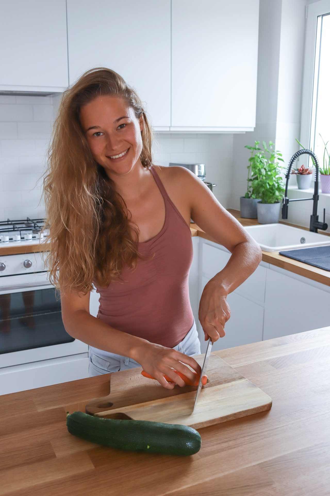
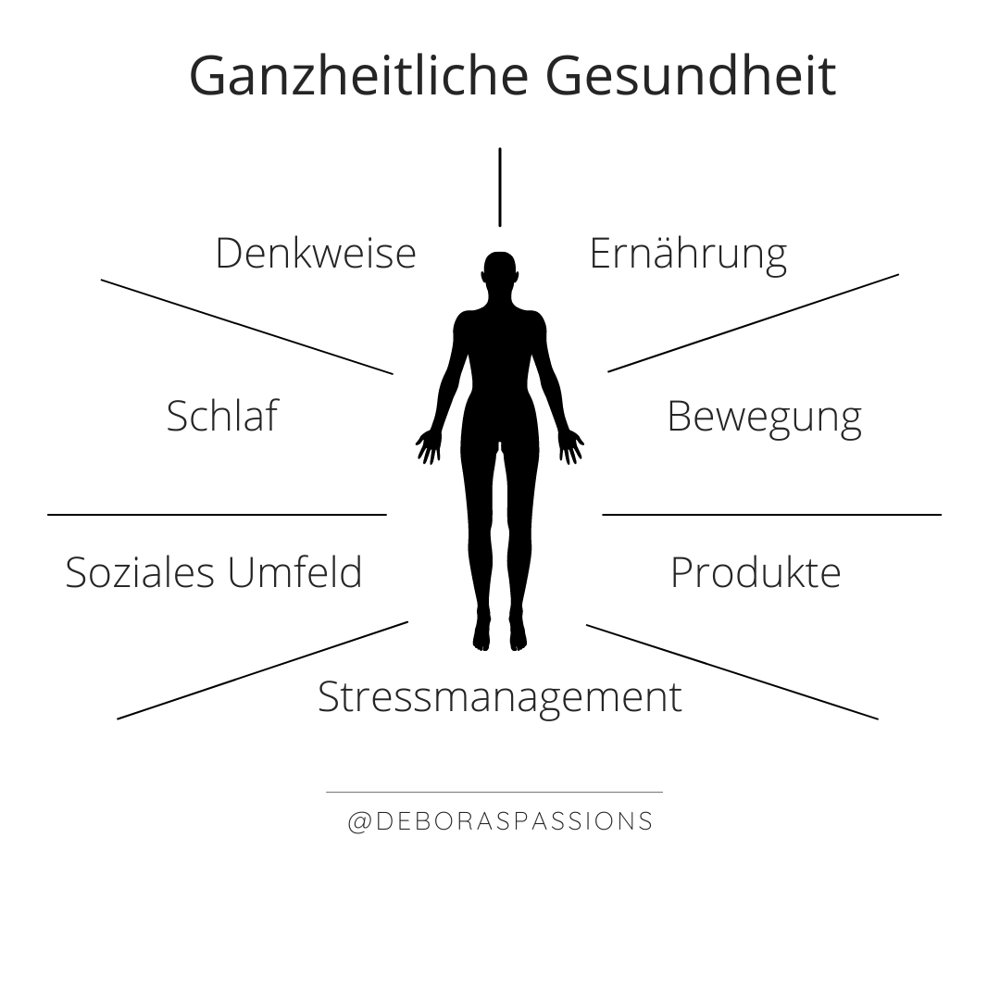
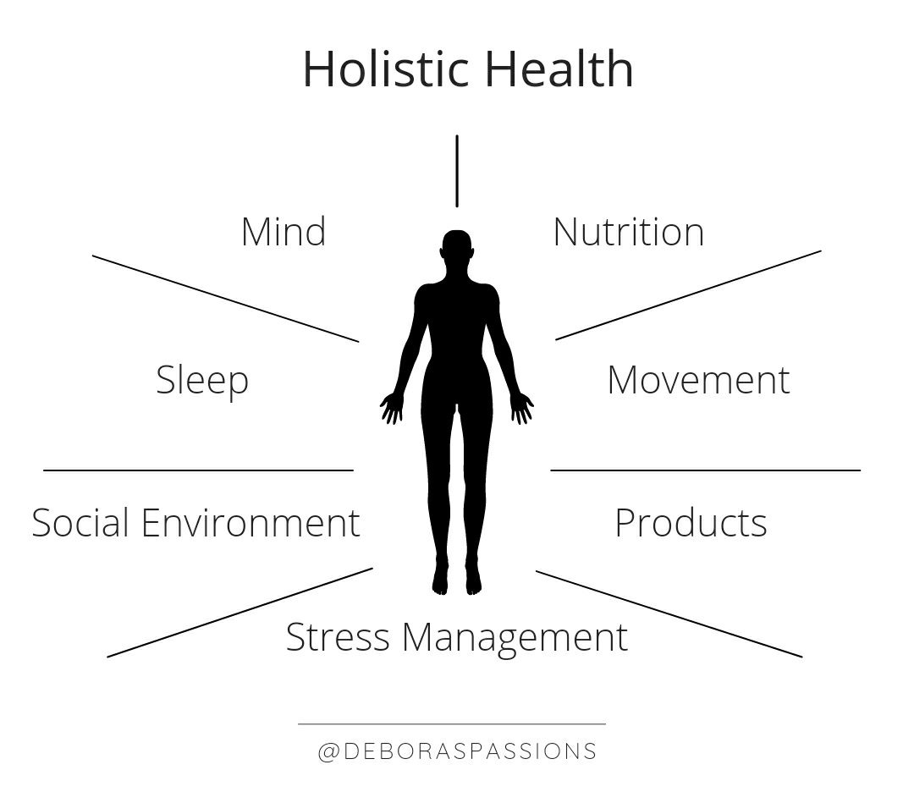

Ich begleite gesundheitsbewusste Menschen ganzheitlich dabei, sich nachhaltig körperlich und mental besser zu fühlen. In meiner Arbeit geht es nicht um strikte Pläne, Kalorienzählen oder Perfektion, sondern darum, dich selbst besser zu verstehen, Zusammenhänge zu erkennen und eine Ernährungs- und Lebensweise zu entwickeln, die deinen Körper, dein Nervensystem und deinen Alltag unterstützt.
Jeder Mensch ist anders. Deshalb arbeite ich individuell mit einer Kombination aus Ernährungswissen, Psychologie, Unterstützung des Nervensystems, auf dich zugeschnittene praktische Routinen, Reflexion und alltagstauglichen Strategien.
Gemeinsam schauen wir nicht nur darauf, was du isst, sondern auch:
Gemeinsam arbeiten wir daran, dass du ...
ERFAHRUNGSBERICHTE
Im Rahmen einer Ernährungsberatung konnte ich von Deboras grossen Wissen rund um Ernährung, Darmgesundheit sowie auch psychiches Wohlbefinden sehr profitieren. Mit individuell auf meine Ziele und meine persönlichen Herausforderungen abgestimmten Hilfestellungen erarbeiteten wir so die Basis für eine langfristig ausgewogene Ernährung. Besonders gefielen mir die Möglichkeit auf alle Fragen stets wissenschaftlich fundierte Antworten zu erhalten sowie die Achtsamkeit. Es war eine Freude die grosse Begeisterung zu spüren, mit der Debora ihr Wissen teilt :) Herzlichen Dank!
- Lydia
Die beste Investition seit langem! Nach nur wenigen Wochen spürte ich die ersten Verbesserungen und fühlte endlich, wovon sie sprach: Ich fühle mich voller Energie und hochkonzentriert. Ich bin immer noch manchmal aufgebläht, aber das ist die Ausnahme. Vorher war ich täglich aufgebläht (vor allem abends). Jetzt weiss ich, was ich tun kann und warum das so ist. Die Reinigung und Wiederherstellung des Darms fühlte sich wie ein grosser Reset-Knopf an. Sie hat mir auch geholfen, eine tägliche Routine und effektive Strategien zur Stressbewältigung zu entwickeln. Ihre Rezepte sind fantastisch und auch bei meinen Kindern sehr beliebt. Sie sind jetzt Teil unseres täglichen Lebens. Ich habe mich sehr unterstützt und verstanden gefühlt. Und ihr Fachwissen auf dem Gebiet der Darmgesundheit ist aussergewöhnlich! Sie ist eine so warmherzige und mitfühlende Seele. Ich kann sie und ihren Service nur wärmstens empfehlen!
- Sylvia
Ich kann Debora wärmstens empfehlen. Sie hat mir sehr dabei geholfen, eine gesunde Balance zu finden und mein Wunschgewicht zu erreichen. Ihr enormes Fachwissen vermittelt sie auf eine verständliche und empathische Weise. Während der Beratungszeit werden alle Fragen beantwortet – sei es zur Tagesgestaltung, zur Work-Life-Balance oder zu anderen psychischen Themen, die einen belasten. Ihr Fokus liegt nicht allein auf der Zahl auf der Waage, sondern vor allem darauf, wie man sich dabei fühlt. Liebe Debora, die Zeit mit dir war wirklich schön – vielen Dank für alles!
- Viktoria
Mein Weg zur ganzheitlichen Gesundheit begann nicht nur durch Studium und Weiterbildungen, sondern auch durch eigene Erfahrungen.
Ich weiss aus persönlicher Erfahrung, wie stark körperliche Symptome, Stress, Selbstwert, Ernährung und psychisches Wohlbefinden zusammenhängen. Über viele Jahre haben mich Themen wie Heisshunger, restriktives Essen, hormonelle Beschwerden, Blähungen, Autoimmunerkrankungen, Burnout und die Suche nach innerer Balance begleitet.
Unser Körper spricht ständig mit uns. Symptome sind oft keine Gegner, sondern wertvolle Hinweise darauf, dass etwas aus dem Gleichgewicht geraten ist. Sie fordern uns auf, unseren Lebensstil und Gewohnheiten zu überdenken, bevor ernsthafte gesundheitliche Probleme auftreten.
Heute verbinde ich psychologisches Wissen, ganzheitliche Gesundheit, Ernährung und praktische Alltagstools, um Menschen nachhaltig auf ihrem eigenen Weg zu begleiten.
Ich freue mich darauf, dich auf deinem Weg zu begleiten.
Debora
Lass uns kennenlernen, spüren, was für dich gerade aktuell ist, und schauen, ob es sich passend anfühlt.

Mein Name ist Debora und ich arbeite als Psychologin und Ernährungsberaterin mit Schwerpunkt auf Ayurveda und Darmgesundheit und ich betreibe einen Catering-Service.
Ich habe eine grosse Leidenschaft für leckeres Essen, Reisen, für die Natur, persönliches Wachstum und Gemeinschaft. Ich liebe es, Menschen dabei zu begleiten, eine Lebensweise zu entwickeln, in der sie sich körperlich und mental wohlfühlen.

CHF 120

CHF 980

CHF 3'800
CHF 10'000